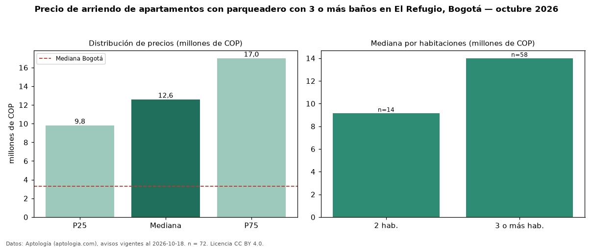

Precio de arriendo de apartamentos con parqueadero con 3 o más baños en El Refugio, Bogotá — octubre 2026
En El Refugio, Bogotá, la mediana de canon mensual de apartamentos con parqueadero con 3 o más baños es COP 12,60 millones, según 72 avisos vigentes. Frente a la mediana de los apartamentos con parqueadero en arriendo de El Refugio (COP 11,70 millones, n = 86), queda 8 % por encima; este segmento reúne el 84 % de esos avisos. Por metro cuadrado, la mediana es COP 50.000/m² al mes (n = 70), 0 % por encima de los apartamentos con parqueadero en arriendo de El Refugio (COP 50.000/m²). El área mediana anunciada es 239 m². El segmento con más oferta es el de 3 o más habitaciones (58 avisos, mediana COP 14 millones); pasar de 2 habitaciones a 3 o más habitaciones cambia la mediana +53 %. La administración mediana declarada es COP 2,10 millones al mes (n = 50), aparte del canon. El estrato más frecuente es 6 (99 % de los avisos con estrato). La mitad central de los avisos va de COP 9,82 millones a COP 17 millones (razón 1,7), una dispersión moderada. Datos: Aptología (aptologia.com), CC BY 4.0 — https://www.aptologia.com/arriendo/bogota/el-refugio. Archivos: PDF, CSV con las cifras y gráfica PNG.

| Avisos únicos | 72 |
|---|---|
| Percentil 25 | COP 9.822.500 |
| Mediana | COP 12.600.000 |
| Percentil 75 | COP 17.000.000 |
| Mediana por m² | COP 50.000 |
Fuente: avisos vigentes de portales inmobiliarios recopilados por Aptología, deduplicados (mínimo 30 avisos únicos por celda). Precios pedidos, no cerrados. Fecha: 2026-10-18.